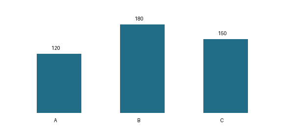

Wordの表示とコピーを確認する
本文・表・図を含むWordの合成サンプルです。PDF・PowerPoint・Excelのサンプルと同じ架空データを使っています。文字選択、コピー、表の操作、翻訳・解説を確認できます。
区分ごとの件数
合計は450件です。Bは180件で最も多く、Aより60件多くなっています。
表1 区分ごとの件数
区分 | 件数 |
A | 120 |
B | 180 |
C | 150 |
合計 | 450 |

図1 表1と同じ件数を示す棒グラフ
確認する操作
これは印刷時の2ページ目に置いた本文です。アプリではWordを文書全体として表示するため、ページ番号を付けて分割しません。後半の本文も抽出・翻訳・解説に含まれることを確認してください。
英語の本文
Category B has 180 records. The total is 450 records. These figures are fictional.
確認時の注意
画像の棒グラフに含まれる文字は直接選択できません。数値は表からコピーできます。翻訳・解説を新しく生成する場合は、本文と表を画面に表示されたAIサービスへ送信します。